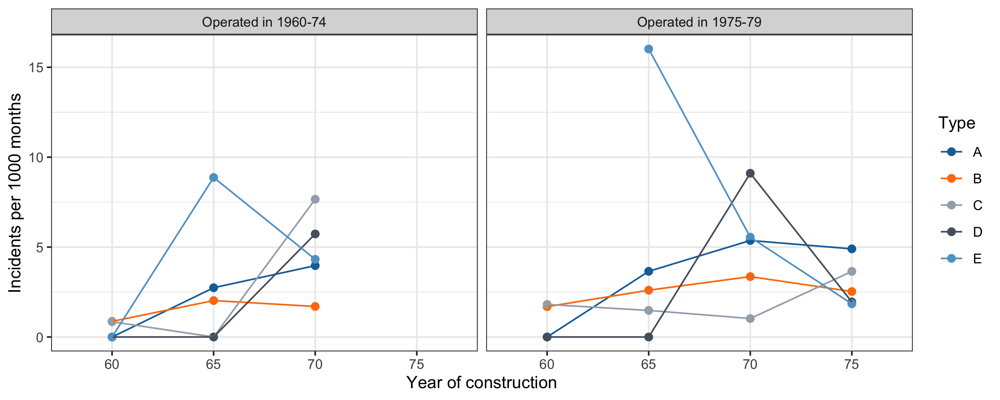

| \exp(\hat{\beta}_j) | Lower 95% | Upper 95% | |
|---|---|---|---|
| typeB | 0.581 | 0.410 | 0.823 |
| typeC | 0.503 | 0.264 | 0.958 |
| typeD | 0.927 | 0.524 | 1.638 |
| typeE | 1.385 | 0.872 | 2.199 |
| year65 | 2.008 | 1.498 | 2.692 |
| year70 | 2.267 | 1.625 | 3.162 |
| year75 | 1.574 | 0.996 | 2.485 |
| period75 | 1.469 | 1.165 | 1.852 |
Poisson regression
Statistics III - CdL SSE
Tommaso Rigon
Università degli Studi di Milano-Bicocca
Homepage
Distinguished Professor Emeritus, University of Florida
GLMs for count data are very common and have theoretical connections with binary and binomial models.
This unit focuses on Poisson regression models.
I will not cover the analysis of contingency tables.
Such a topic is nonetheless discussed in the textbook but is not part of the exam.
The most important aspects have already been covered in Unit B.
Notation and recap
In a Poisson regression model, we observe Y_i independent Poisson random variables, so that Y_i \overset{\text{ind}}{\sim} \text{Poisson}(\mu_i), \qquad g(\mu_i) = \eta_i = \bm{x}_i^T \beta, \qquad i=1,\dots,n.
The canonical link is g(\cdot) = \log(\cdot), which implies a multiplicative structure for the mean.
Under the canonical link, the likelihood equations are \sum_{i=1}^n(y_i - \mu_i)x_{ir} = 0, \qquad r=1,\dots,p. The solution therefore has a nice interpretation as a method of moments estimator, in that \sum_{i=1}^n y_i x_{ir} = \sum_{i=1}^n\mathbb{E}(Y_i) x_{ir}, \qquad r=1,\dots,p.
Interpretation of the regression coefficients
Under the logarithmic link, the mean has a multiplicative structure, namely \mu_i = \exp(\bm{x}_i^T \beta) = \exp(\beta_1)^{x_{i1}} \times \cdots \times \exp(\beta_p)^{x_{ip}} = \prod_{j=1}^p \alpha_j^{x_{ij}}, \qquad \alpha_j = \exp(\beta_j).
As a result, a unit increase of the jth covariate from x_{ij} to x_{ij} + 1, keeping the other covariates fixed, has the following impact on the new mean, say \mu_\text{new} \mu_\text{new} = \alpha_1^{x_{i1}} \times \cdots \times \alpha_j^{x_{ij} + 1} \times \cdots \times \alpha_p^{x_{ip}} = \alpha_j \left( \alpha_1^{x_{i1}} \times \cdots \times \alpha_p^{x_{ip}} \right) = \alpha_j \mu_i. In other words, the regression parameters, once exponentiated, can be interpreted as relative changes of the mean, namely \alpha_j - 1 = \exp(\beta_j) - 1 = \frac{\mu_\text{new} - \mu_i}{\mu_i}.
The interpretation in terms of relative changes is a consequence of the logarithmic link function. Therefore, the same interpretation applies whenever this link is used.
Exposure rate
Often the expected value of a response count Y_i is proportional to an index t_i, the exposure. For instance, t_i might be an amount of time and/or a population size, such as in modeling crime counts for various cities. Or, it might be a spatial area, such as in modeling counts of plant species.
In these cases, the sample rate is Y_i / t_i, with expected value \mu_i / t_i. With explanatory variables, a model for the expected rate under a logarithmic link has the form \log\left(\frac{\mu_i}{t_i}\right) = \bm{x}_i^T\beta \qquad \implies \qquad \log{\mu_i} = \bm{x}_i^T\beta + \log{t_i} \qquad \implies \qquad \mu_i = t_i \exp(\bm{x}_i^T\beta).
The adjustment term \log{t_i} is called an offset. The fit corresponds to using \log{t_i} as an explanatory variable and forcing its coefficient to equal 1. In R, it is specified as
offset(log(t))in the model formula.The mean is proportional to t_i, with a proportionality constant \exp(\bm{x}_i^T\beta) that depends on the covariates. The quantities \exp(\beta_j) are interpreted as relative changes of the rate.
Whether the coefficient of \log{t_i} is indeed equal to 1 can be checked by estimating it as a free parameter, as in the
shipscase study below.
Overdispersion
In Poisson regression the main assumption is that Y_i \sim \text{Poisson}(\mu_i), implying that \text{var}(Y_i) = \mu_i, where implicitly we have set \phi = 1.
However, from the analysis of the residuals or by comparing the Pearson X^2 statistic with n - p, we may realize that the data present overdispersion, namely that \text{var}(Y_i) > \mu_i. A common specification is \text{var}(Y_i) = \textcolor{red}{\phi} \mu_i, with \phi > 1. In either case, the Poisson regression model is misspecified.
The two most common solutions to overdispersion are the following:
- the use of quasi-likelihoods, discussed in Unit E;
- the use of another parametric distribution; a typical choice is the negative binomial.
Zero-inflation
The frequency of zero outcomes is often larger than expected under a Poisson model. Since the Poisson mode is \lfloor \mu \rfloor (for non-integer \mu), a Poisson GLM is inadequate when the mean is large but the modal response is 0.
Such data are called zero-inflated: some subjects have a structural zero, while the others have positive counts or random zeros.
Example: weekly gym visits. Some people never exercise (structural zero), others exercise occasionally but not in the past week (random zero).
The two most common solutions to zero-inflation are the following:
- the zero-inflated Poisson (ZIP) model, a mixture of a point mass at zero, with weight \pi_i, and a \text{Poisson}(\mu_i), so that \mathbb{P}(Y_i = 0) = \pi_i + (1 - \pi_i)e^{-\mu_i};
- hurdle models, which model zero vs. nonzero outcomes and then the positive counts through a zero-truncated distribution.
Case study: the ships data
The ships dataset
The
shipsdataset of theMASSlibrary, analysed in McCullagh and Nelder (1989) (Section 6.3.2), concerns a type of damage caused by waves to the forward section of cargo ships.The data are grouped into 40 cells. The variables are:
type: ship type, A to E;year: year of construction, 1960–64, 1965–69, 1970–74, 1975–79 (coded as 60, 65, 70, 75);period: period of operation, 1960–74 or 1975–79 (coded as 60, 75);service: aggregate months of service;incidents: number of damage incidents.
type year period service incidents
1 A 60 60 127 0
2 A 60 75 63 0
3 A 65 60 1095 3
4 A 65 75 1095 4
5 A 70 60 1512 6
6 A 70 75 3353 18This case study is based on the exam of 29 April 2015.
Ships that never sailed
- There are 6 cells with
service= 0 and therefore, necessarily,incidents= 0:
type year period service incidents
7 A 75 60 0 0
15 B 75 60 0 0
23 C 75 60 0 0
31 D 75 60 0 0
34 E 60 75 0 0
39 E 75 60 0 0Five of them are ships built in 1975–79 that would have operated in 1960–74, which is impossible.
These cells carry no information: if t_i = 0, then \mu_i = t_i \exp(\bm{x}_i^T\beta) = 0 whatever the value of \beta. We remove them, leaving n = 34 cells.
Exploratory analysis

The
serviceranges from 45 to 44,882 months: the counts are not comparable, and the rates must be considered instead.Rates tend to be higher for ships built after 1964 and in the period 1975–79, and they vary across types. Cells with little service, mostly of types D and E, give very noisy rates, often equal to zero.
Modelling the ships data
Let Y_i be the number of incidents and t_i the months of service of the ith cell. A linear model would be inappropriate: the Y_i are counts whose variability grows with the mean, and they depend on the exposure t_i.
We consider the Poisson rate model Y_i \overset{\text{ind}}{\sim} \text{Poisson}(\mu_i), \qquad \log{\mu_i} = \log{t_i} + \bm{x}_i^T\beta, \qquad i = 1,\dots,34, where \bm{x}_i contains the intercept and the dummy variables of
type,yearandperiod, so that p = 9.The baseline is a ship of type A, built in 1960–64 and operated in 1960–74.
Hence, \exp(\bm{x}_i^T\beta) = \mu_i / t_i is the expected number of incidents per month of service.
The rate model
Call:
glm(formula = incidents ~ type + year + period + offset(log(service)),
family = poisson, data = ships)
Coefficients:
Estimate Std. Error z value Pr(>|z|)
(Intercept) -6.40590 0.21744 -29.460 < 2e-16 ***
typeB -0.54334 0.17759 -3.060 0.00222 **
typeC -0.68740 0.32904 -2.089 0.03670 *
typeD -0.07596 0.29058 -0.261 0.79377
typeE 0.32558 0.23588 1.380 0.16750
year65 0.69714 0.14964 4.659 3.18e-06 ***
year70 0.81843 0.16977 4.821 1.43e-06 ***
year75 0.45343 0.23317 1.945 0.05182 .
period75 0.38447 0.11827 3.251 0.00115 **
---
Signif. codes: 0 '***' 0.001 '**' 0.01 '*' 0.05 '.' 0.1 ' ' 1
(Dispersion parameter for poisson family taken to be 1)
Null deviance: 146.328 on 33 degrees of freedom
Residual deviance: 38.695 on 25 degrees of freedom
AIC: 154.56
Number of Fisher Scoring iterations: 5- The likelihood ratio test against the null model gives 107.63 on 8 degrees of freedom: the covariates are jointly significant.
Is the offset appropriate?
- We estimate the coefficient of \log{t_i} as a free parameter, instead of fixing it to 1:
Estimate Std. Error
0.903 0.102 Analysis of Deviance Table
Model 1: incidents ~ type + year + period + offset(log(service))
Model 2: incidents ~ type + year + period + log(service)
Resid. Df Resid. Dev Df Deviance Pr(>Chi)
1 25 38.695
2 24 37.804 1 0.89079 0.3453- The estimate is close to 1 and the likelihood ratio test does not reject H_0: the coefficient equals 1. The rate model is supported by the data.
Interpretation of the coefficients
The estimated rate for the baseline is 1000 \exp(\hat{\beta}_1) = 1.65 incidents per 1000 months.
For a ship of type B, the rate is multiplied by 0.581, i.e. it is 41.9% lower than for type A, the other covariates being equal.
In the period 1975–79, the rate is 46.9% higher than in 1960–74. Ships built in 1965–74 have about twice the rate of those built in 1960–64.
Goodness of fit and overdispersion
The deviance is 38.7 on 25 degrees of freedom (p-value 0.04) and X^2 = 42.28, so that \hat{\phi} = 1.69: there is a moderate overdispersion.
Using a quasi-Poisson model (Unit E), the estimates are unchanged, while the standard errors are multiplied by \sqrt{\hat{\phi}} = 1.3:
Single term deletions
Model:
incidents ~ type + year + period + offset(log(service))
Df Deviance F value Pr(>F)
<none> 38.695
type 4 62.365 3.8232 0.014728 *
year 3 70.103 6.7640 0.001706 **
period 1 49.355 6.8873 0.014590 *
---
Signif. codes: 0 '***' 0.001 '**' 0.01 '*' 0.05 '.' 0.1 ' ' 1type,yearandperiodremain significant at the 5% level.
Conclusions
The number of incidents must be modeled relative to the months of service: the offset \log{t_i} is supported by the data.
The incident rate depends on the type of ship, its year of construction and the period of operation.
There is a moderate overdispersion. Accounting for it widens the confidence intervals, but the conclusions do not change.
References
Agresti, A. (2015), Foundations of Linear and Generalized Linear Models, Wiley.
McCullagh, P., and Nelder, J. A. (1989), Generalized linear models, Chapman & Hall/CRC.
Salvan, A., Sartori, N., and Pace, L. (2020), Modelli lineari generalizzati, Springer.